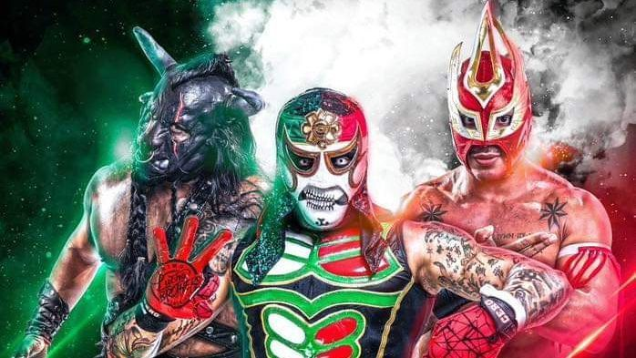

El uso principal del kayfabe esta en el deporte espectaculo
Kayfabe (/ keɪfeɪb /) es un término de taquigrafía o argot utilizado para describir el hecho de que la lucha libre profesional es un evento organizado por secuencias y no un deporte competitivo a pesar de que se presenta como tal. Inicialmente, las personas "en el negocio" (ya sea luchadores o aquellos que trabajan detrás de escena) usaban el término "kayfabe" como un código entre aquellos en la profesión de lucha libre, discutiendo asuntos en público sin revelar la naturaleza del guión. Kayfabe cubre tanto el hecho de que las coincidencias tienen guiones como los luchadores retratan personajes para sus shows. A diferencia de los actores que solo representan a sus personajes cuando están en el escenario, los luchadores profesionales a menudo se mantienen "fuera de serie", especialmente cuando interactúan con los fanáticos, tratando de preservar la ilusión de la lucha libre profesional. Otro término para "kayfabe" es la palabra "trabajo", o "trabajado", que también se refiere a la naturaleza escenificada de la lucha libre profesional. Por el contrario, algo que no es "kayfabe" sino legítimo, ya sea una pelea o una declaración, se conoce como "disparar".
Recuerdo al tipo que llevaría nuestras chaquetas al vestidor. Cada vez que lo hacía, alguien gritaba "Kayfabe". ... Entonces, una noche, el hombre decidió defenderse y le dijo a todo el vestuario: "No me importa gritar, pero quiero que sepan que mi nombre no es Kayfabe. Es Mark". ... Lo que el no sabía es que los luchadores llamaban a las personas fuera de las "marcas" comerciales, por eso gritábamos kayfabe en primer lugar.
— Pat Patterson, describiendo su interacción con un asistente de cuadrilla en el territorio de Pacific Northwest Wrestling durante la década de 1960.

Algunos usos del kayfabe en la lucha libre son...
Simulacion de:
-Relaciones
-Lesiones
-Contraros, estados de empleo y suspensiones
-Ademas de por su puesto generar todas las history lines que los bookers escriben.